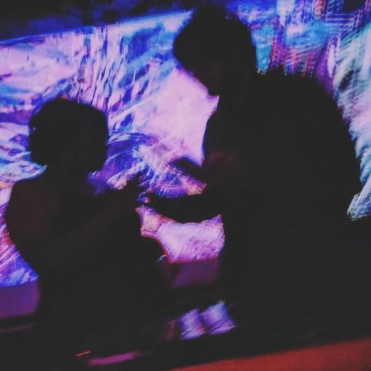

Hello
We use code and tech to deconstruct and rearrange pieces of the real world to
create something that takes on a life of its own. Our art explores culture and life within
technology.
Our work largely centres on themes of a post-digital world i.e. what it means to make art in a
non-physical/semi-physical space. We also believe that art and music are a symbiotic sensory
experiences and our work seeks to explore the visual nature of music and sound.
We use cellphone cameras, joysticks, microphones and webcams to make our art interact with the real
world creating a sort of Interreality.
We use a combination of creative coding frameworks, shaders, traditional painting and photomontage
to create experimental collages.
Our influences are Nam June Paik, Stan Brakhage, Sarah Sze, Wassily Kandinsky, Frantisek Kupka,
Hilma af Klint, KM Adimoolam, Joshua Davis and Zach Lieberman.
You can check out our work in the links below